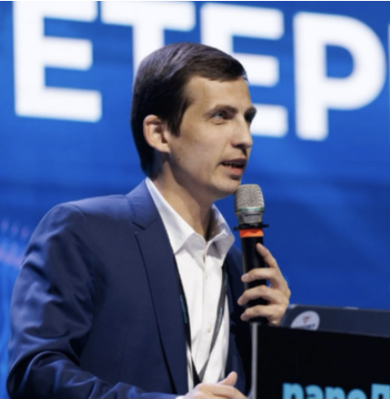
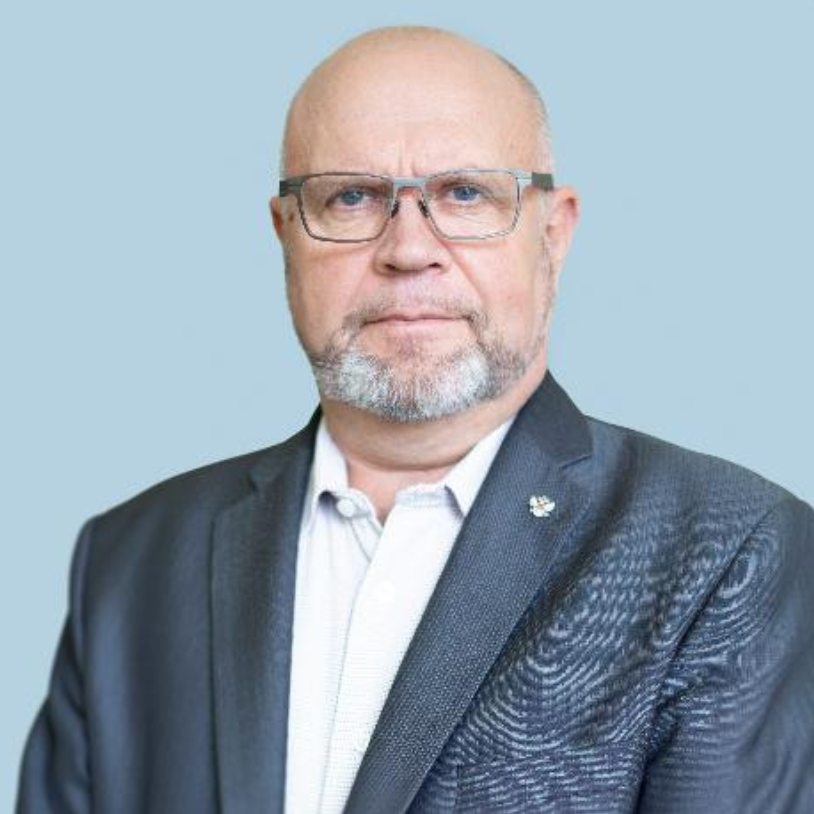

Высшая инженерная школа · Вебинары
Прошедшие вебинары
13 записей в порядке исходной страницы
30 СенЗаконное увеличение стоимости объекта на этапе расчета НМЦКСветлана Притчина, Начальник отдела и ведущий преподаватель ценообразования и сметного нормирования учебного центра ФАУ «РосКапСтрой».Смотреть запись на Rutube 31 АвгСпорные позиции в актах выполненных работ: Как обосновать и защитить объемы перед заказчиком и экспертизойМария Дружинина, Руководитель проекта по проектированию ГК САМОЛЁТ. Опыт работы ГИП по проектированию и строительству. Победитель конкурса «Лучший проект» от ОАО Мосэлектронпроект.Смотреть запись на Rutube 29 ИюлЦифровая экосистема инженера-строителя: обзор ПО и ИИ решений на всех этапах работыТимофей Лютомский, Директор по цифровой трансформации девелоперской компании «РАЗУМ»Смотреть запись на Rutube  14 АвгКак автоматизировать ИД в строительстве: практика автоматизации АОСРИльфак Валиев, эксперт Excel, инженер-строитель с опытом работы более 10 лет, разработчик "Генератор ИД", "Joint"Смотреть запись на Rutube 26 ИюнКак автоматизировать процессы в строительстве с помощью Excel и VBAИльфак Валиев, эксперт Excel, инженер-строитель с опытом работы более 10 лет, разработчик "Генератор ИД", "Joint"Смотреть запись на Rutube 29 МаяФишки и трюки в Excel для инженеров-строителейИльфак Валиев, эксперт Excel, инженер-строитель с опытом работы более 10 лет, разработчик "Генератор ИД", "Joint"Смотреть запись на Rutube
14 АвгКак автоматизировать ИД в строительстве: практика автоматизации АОСРИльфак Валиев, эксперт Excel, инженер-строитель с опытом работы более 10 лет, разработчик "Генератор ИД", "Joint"Смотреть запись на Rutube 26 ИюнКак автоматизировать процессы в строительстве с помощью Excel и VBAИльфак Валиев, эксперт Excel, инженер-строитель с опытом работы более 10 лет, разработчик "Генератор ИД", "Joint"Смотреть запись на Rutube 29 МаяФишки и трюки в Excel для инженеров-строителейИльфак Валиев, эксперт Excel, инженер-строитель с опытом работы более 10 лет, разработчик "Генератор ИД", "Joint"Смотреть запись на Rutube

30 ИюнКак инженеру адаптироваться к современным реалиям и остаться востребованным на сокращающемся рынке трудаАлександр Высоцкий, Эксперт в области BIM/ТИМ, цифровой трансформации проектно-строительной отрасли и развития инженерных команд. Более 15 лет опыта в проектировании, BIM и управленческом консалтинге.Смотреть запись на Rutube 30 АпрУправленческий подход к рискам строительного проекта: как защитить бюджет и срокиДмитрий Кочнев, Член экспертного совета Государственной Думы по строительству и ЖКХ. Предприниматель, практик в области управления проектами строительства, консалтинга и аудита строительных проектов.Смотреть запись на Rutube 31 ОктРазработка сметной документации — 2025: чек-листы, взаимодействие, цифровизацияАлександра Вишневецкая, Заместитель начальника управления экономики строительства, главный экономист проекта АО «Институт «Стройпроект», член союза инженеров-сметчиковСмотреть запись на Rutube 24 СенКак минимизировать ошибки при сдаче ИД и оперативно защитить объемы перед ЗаказчикомТаиса Волкова, Эксперт в области исполнительной документации в различных направлениях строительства с опытом работы в более 16 летСмотреть запись на Rutube14 АвгКак автоматизировать ИД в строительстве: практика автоматизации АОСРИльфак Валиев, эксперт Excel, инженер-строитель с опытом работы более 10 лет, разработчик "Генератор ИД", "Joint"Смотреть запись на Rutube 26 ИюнКак автоматизировать процессы в строительстве с помощью Excel и VBAИльфак Валиев, эксперт Excel, инженер-строитель с опытом работы более 10 лет, разработчик "Генератор ИД", "Joint"Смотреть запись на Rutube 29 МаяФишки и трюки в Excel для инженеров-строителейИльфак Валиев, эксперт Excel, инженер-строитель с опытом работы более 10 лет, разработчик "Генератор ИД", "Joint"Смотреть запись на Rutube 
23 АпрРоль технического заказчика в современном строительствеАлександр Григорьев, Почетный строитель России, Профессор, Заместитель заведующего кафедрой «Государственный строительный надзор и саморегулирование в строительстве» РУТ (МИИТ), Эксперт Департамента независимой оценки квалификации ФАУ «РосКапСтрой»Смотреть запись на Rutube 27 МарСостав и содержание ППР, использование ИИ при разработке ППРИрина Гладковская, Инженер по организации строительстваСмотреть запись на Rutube 14 ФевПравила взаимодействия с органами государственного строительного надзора в 2025 годуМихаил Луняков, Заведующий Корпоративной кафедрой Министерства строительства и ЖКХ РФ НИУ МГСУ, д.э.н., профессор, Почетный строитель РоссииСмотреть запись на RutubeПо вашему запросу записи не найдены.